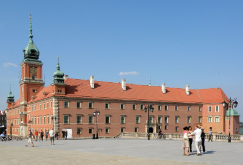

Praesent diam nisi, placerat et leo sed, tempus convallis tellus. Nulla sagittis in purus porttitor fringilla. Morbi malesuada odio urna, ac scelerisque mauris sodales accumsan. Suspendisse nunc arcu, maximus condimentum nisl sit amet, molestie pulvinar diam. Suspendisse potenti.
In scelerisque ante nec sapien dignissim mattis. Sed ac mollis ex. In eleifend elit fringilla massa rutrum, et fringilla nibh gravida. Cras rhoncus condimentum nulla, quis porttitor diam porta sit amet. Aliquam ligula diam, volutpat quis sem sed, rutrum ultrices orci.